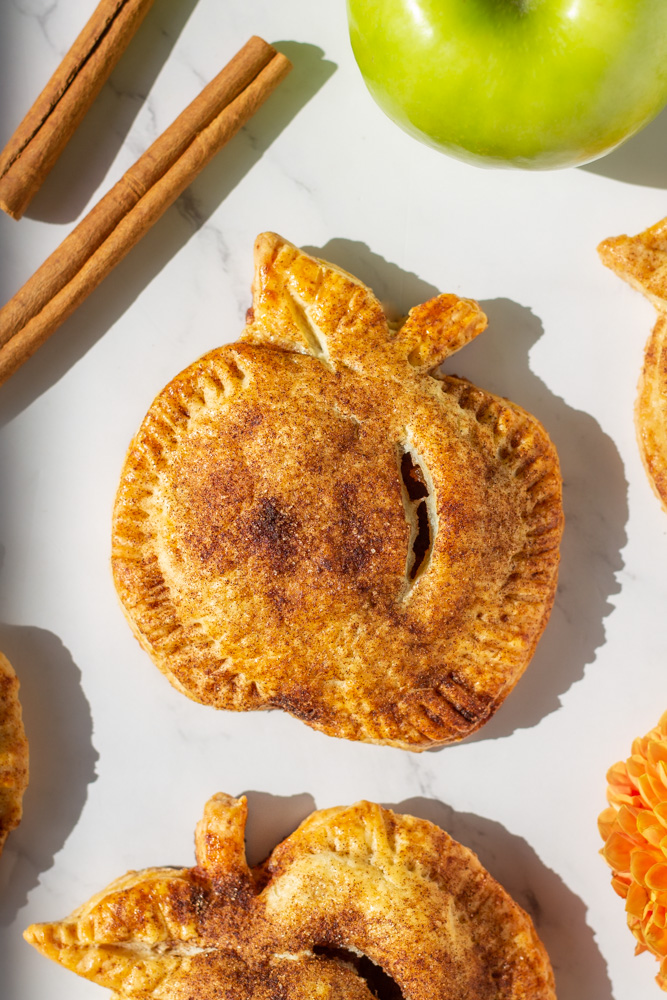

Mini apple Pies

hand held pies
Do you like apple pies but you are in a hurry ? in this recipe we will
show you how to make a mini apple pies without the hassles of eating one
Ingredients
- ¾ stick cold butter (6 tablespoons) cut into tablespoon pieces
- 4 ounces cold cream cheese cut into tablespoon pieces
- 1 cup all-purpose flour
- ½ teaspoon salt
Instructions
Apple Filling
- Brown the butter in a large skillet over medium heat. Once it is golden and toasty,
stir in the sugars, salt, cinnamon and vanilla.
- Then stir in the peeled, cubed apple pieces into the warm caramel mixture.
- Zest the lemon and cook over medium heat for about 8-10 minutes until the apples are softened. Set aside to cool.
Assembly
- Roll dough out until 1/4” thick place and cut into 8 apple shapes or rectangles (~3-4 inches in length)
- Scoop 2 tablespoons of the apple mixture into the center of 4 pieces of the dough
- Make the egg wash by mixing together the milk and egg. Brush egg wash along the outside edge of the crust where there is no apple filling
- Place the 4 pieces without apple on top of the pieces with apple and egg wash. Seal them by pressing a fork along the outside edge of the pie so both pieces of crust stick together
- Brush egg wash across the entire top of the hand pie and sprinkle with cinnamon sugar
- Cut a small slit or poke a few holes across the top of the pie
- Bake at 375 degrees F for 30 minutes until golden